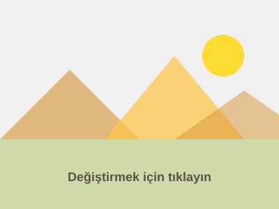

Metni Düzenle
Aşağıdaki metni düzenlemek ve adınızı eklemek için çift tıklayın
Bu görevi tamamlamak için:
- "Merhaba ___" metnine çift tıklayın
- Alt çizgileri adınızla değiştirin
- Değişikliklerinizi uygulamak için Enter'a basın veya dışarı tıklayın
Resimleri canlı olarak değiştirin
Aşağıdaki resme tıklayarak Resim Kütüphanesinden beğendiğiniz bir resimle değiştirin.

Bu görevi tamamlamak için:
- Resim Kütüphanesi'ni açmak için resme tıklayın (araç çubuğundaki simgesiyle veya çift tıklayarak açıp kapatabilirsiniz).
- Resim Kütüphanesinde: küçük resimleri önizlemek için üzerlerine gelin
- Sayfanıza yerleştirmek için bir küçük resme tıklayın veya önce indirmek için simgesine tıklayın
Öğeleri görsel olarak düzenleyin
Aşağıdaki kartı toplamda 3 kart olacak şekilde çoğaltın, ardından 1 kartı silin.
1/3 cards, 0/1 deleted
Kart
Üst kartı seçmek için yukarıdaki araç çubuğunda bulunan simgesine tıklayın.
Bu görevi tamamlamak için:
- Seçmek için karta tıklayın.
- Toplam 3 kartınız olana kadar kartları çoğaltmak için düğmesini kullanın veya tuşuna basın.
- Herhangi bir kartı seçin ve kaldırmak için düğmesini kullanın veya Delete tuşuna basın.
- İpucu: ile geri alabilir ve ile yineleyebilirsiniz.
Öğeleri sürükleyerek yeniden sıralayın
Sırayı değiştirmek için herhangi bir notu sürükleyin.
Bu görevi tamamlamak için:
- Sürüklemeye başlamak için herhangi bir nota tıklayıp basılı tutun
- Sırayı değiştirmek için yukarı veya aşağı hareket ettirin
- Yeni konumuna bırakmak için serbest bırakın
Bağlantıları düzenleyin ve sayfanızı önizleyin
Bu bağlantının işaret ettiği yeri değiştirmek için araç çubuğundaki simgesini seçin.
Düzenleme modu ve Önizleme modu
Sayfadaki öğeleri seçin ve değiştirin
Sayfanızı ziyaretçilerin göreceği şekilde görün
Modlar arasında geçiş yapmak için F8 tuşuna basın veya düğmelerine tıklayın.
İpuçları:
- Düzenlemek üzere seçmek için herhangi bir bağlantıya tıklayın
- Bağlantıları ayrı bir sayfada açmak için Yeni sekmede aç seçeneğini etkinleştirin
- Bağlantıları ve etkileşimleri test etmek için Önizleme moduna (F8) geçiş yapın